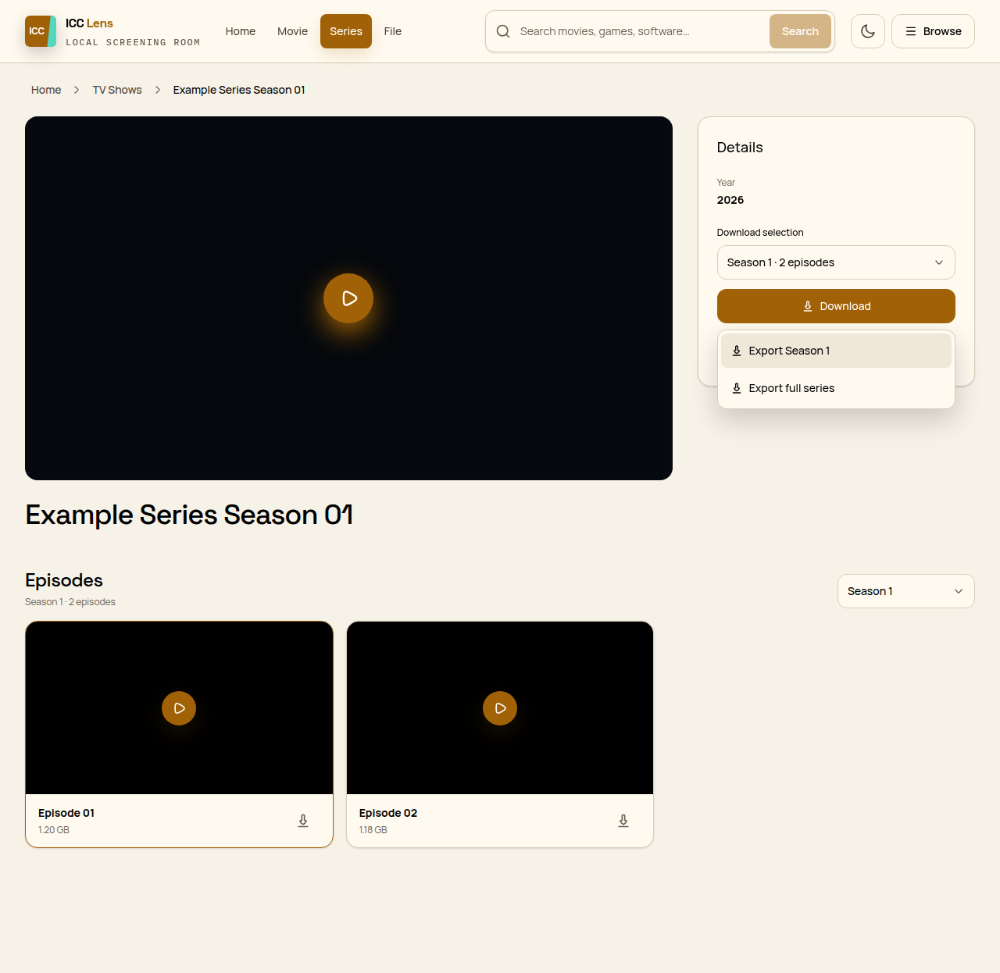

Your local media library, finally easy to see.
ICC Lens replaces the legacy ICC pages with a focused Chrome experience for browsing, searching, playing, and downloading—without sending your activity anywhere else.

One private server Runs only on the configured ICC address.
No telemetry Searches and page content stay in your browser.
Original page always reachable Return to the server UI whenever you need it.
One interface from search to screening.
Browse a poster-first catalog, inspect a title, choose an episode, and play it without falling back into disconnected legacy screens.
A better view, not another media service.
ICC Lens reads the page already open on your private network and renders a clearer interface over it. It does not host the catalog, create accounts, upload media, or broaden access to the server.
- Accounts
- None
- Analytics
- None
- Remote code
- None
Download the latest ICC Lens release.
GitHub Releases provides the current Chrome ZIP and checksum. The landing page always points to the latest release instead of displaying a version number.
-
01
Download and unzipGet the latest Chrome package from GitHub.
-
02
Open Chrome extensionsEnable Developer mode in chrome://extensions.
-
03
Load unpackedChoose the unzipped extension folder, then visit ICC.